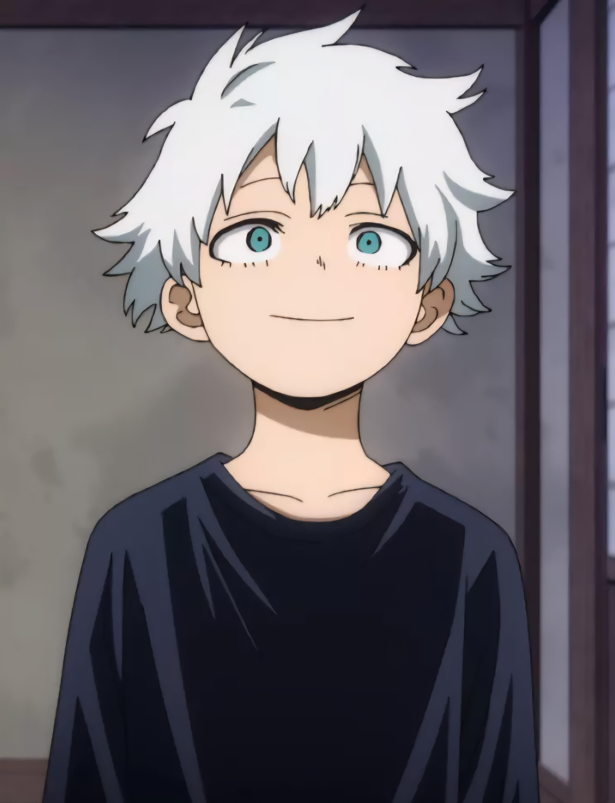
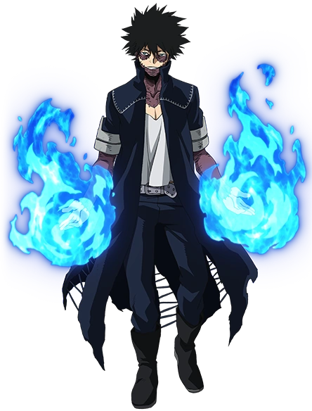
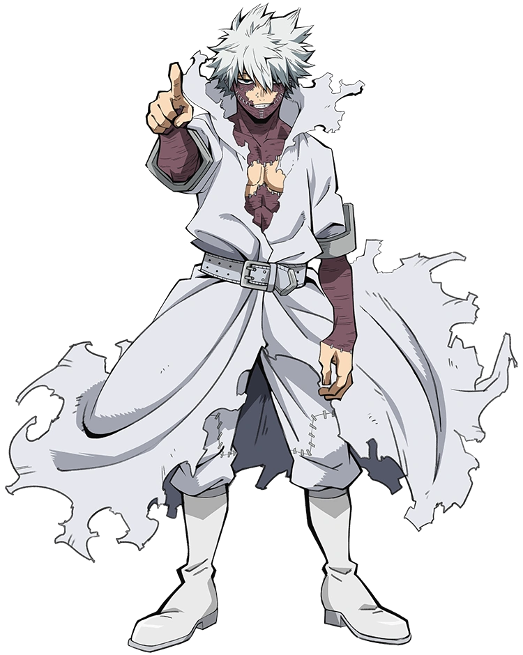

quem é Dabi e qual é sua história?
O passado de Dabi, revelado como Toya Todoroki, é marcado pela negligência e pela obsessão de seu pai, Endeavor, em criar o herdeiro perfeito para superar o All Might.
Embora possuísse chamas extremamente potentes, Toya herdou a resistência ao frio de sua mãe, o que fazia seu próprio corpo se queimar ao usar o poder. Após tantás tentativas, vários filhos até o nascimento de Shoto, Toya sentiu-se substituído, que acabou dee sofreur um grave acidente no Pico de uma floresta ao perder o controle de suas chamas azuis.
Dado como morto, ele foi salvo por All For One, teve seu corpo remendado com grampos e cicatrizes, e renasceu como Dabi, como sede de vingança decidiu destruir a reputação de sua família e a sociedade de heróis.
Carreira como vilão
Partcipão da Liga dos vilões
Depois de se tornar vilão dabi se juntou à Liga dos Vilões liderada por Tomura Shigaraki, depois assumiu a líderança do Esquadrão de Ação da Vanguarda, usando suas chamas azuis para sequestrar e aterrorizar heróis e estudantes da U.A E por fim, ele teve a participação para iniciar uma guerra contra os Herois
Gerra dos Herois contra os Vilões
Na guerra entre heróis e vilões, ele fez uma transmissão ao vivo revelando ao mundo inteiro sua verdadeira identidade como Touya e escancarando os abusos domésticos do herói número 1 Endeavor. No seu confronto final ele inicia sua vingança autodestrutiva, elevando seu corpo ao limite absoluto na batalha contra sua própria família (incluindo seu irmão Shoto), aceitando que sua existência serviria apenas para queimar e destruir o legado de Endeavor junto com ele.
Hoje em dia
Depois do fim da guerra, Dabi é derrotado e foi mantido em um aparelho de suporte devido o estado crítico de suas feridas por causa pelas suas chamas. Infelizmente não sobreviveu por muito tempo mas a sua família sempre o visitou ate mesmo o Endeavor prometendo a ele que finalmente amaria a sua família.
as aparência do dabi éu representado na imagem abaixo:
Toya Todoroki

Sua infância antes da trajédia.
Dabi na Liga dos
Vilões

Depois do seu renaçimento como Dabi.
Dabi na guerra
dos Herois contras
Vilões

Na guerra pós ter já revelado a sua identidade
por que eu gosto do Dabi?
Eu gosto do Dabi como vilão não só do fato dele ser maneiro mas também por ser uma cara bem estratégico, ele faz o estrágo mas só aparece quando é preciso, nas sombras ou nos becos, E também ele é um vilão que sabe usar seus poderes contras as pessoas de uma forma muito extratégica.